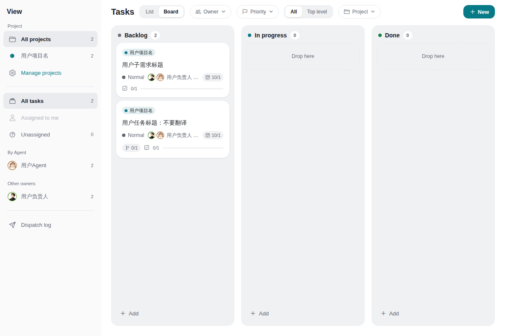

把 Agent 连进来
连接 Hub，查看节点与运行状态。你的工具，进入同一个工作空间。

同一份上下文，少一点来回切换。
连接 Hub，查看节点与运行状态。你的工具，进入同一个工作空间。
给任务绑定负责人和参与人，用项目与子需求组织工作。
人员绑定不等于自动派单在对话中沟通，在看板里维护状态。回到工作台，继续下一步。
版本与安装要求，以官方发布页为准。
Apple Silicon
选择下载线路 ↓国内镜像 / GitHubx64 · Windows 10 / 11
选择下载线路 ↓国内镜像 / GitHub出门后，也能继续查看工作。
Android 下载信息 ↗iOS 开放状态请查看官方说明使用 anet CLI 接入节点、管理 Hub 与自动化流程。
Hub 与数据可以运行在你控制的机器上。
从桌面开始，也保留自己部署的自由。